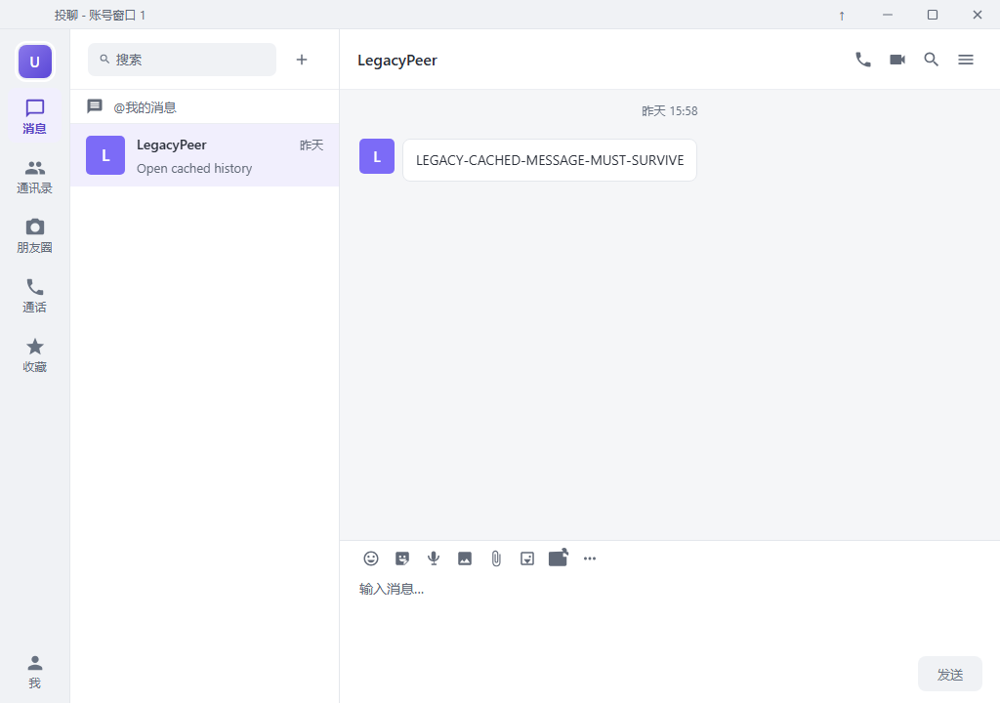
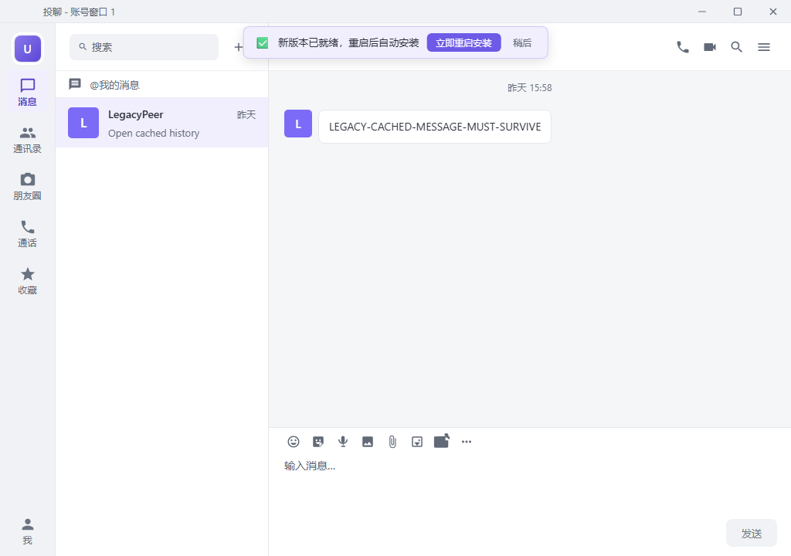
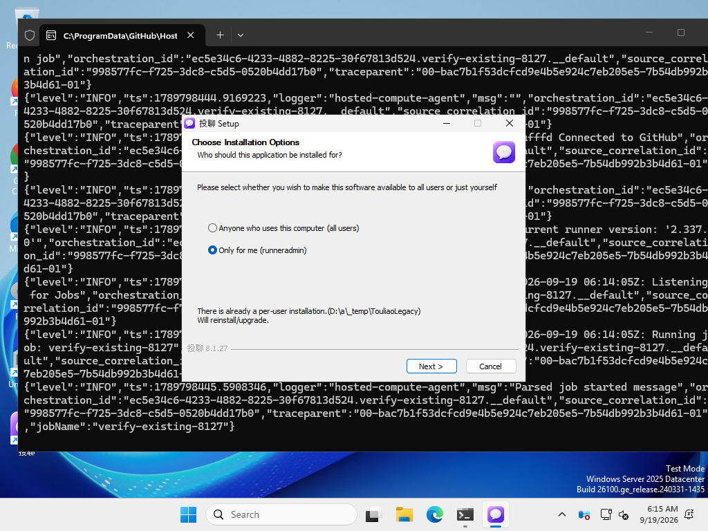
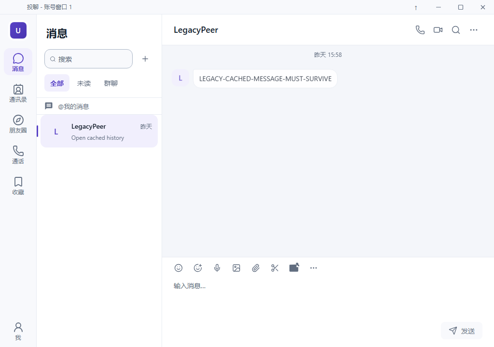

已发布成功。真实已安装旧版从生产地址发现并下载更新，原签名和完整性校验通过，经旧客户端“立即重启安装”和原生 NSIS 向导升级。新版本保留隔离测试账号的登录状态与原消息缓存。
环境为 GitHub Windows VM，账号 API 为隔离 fixture。物理电脑、生产账号与实时消息/音视频未验证。此过程属于应用内覆盖升级；无 Authenticode，原 Ed25519 更新签名保留。
原生测试结果 · 发布/备份回执 · 最终公网复核 · 真实更新器日志 · 原生安装按钮记录



